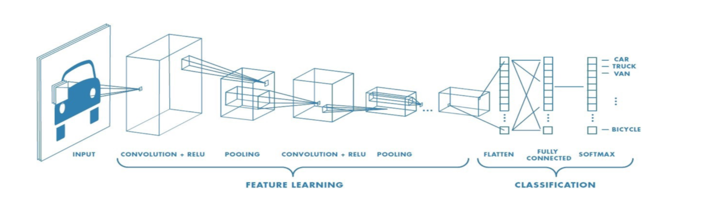
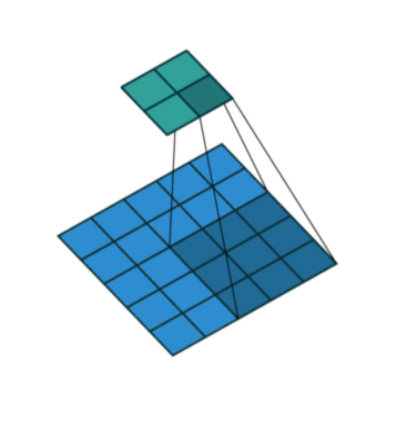

Convolution Neural Networks
CNNs
Input Image
Convolutional Layer
Nonlinearity (Activation Function; relu)
Max Pooling Layer
Fully Connected
Output Layer

Steps
Receive some input volume (image) and pass it thru a series of convolution layers to abstract high level features from the image.
For each convolution layer, we slide a filter across the input image spatially and compute a series of dot products.
The filters are small spatially (e.g. 5x5) and are initialized randomly, which we eventually learn these weights using
backpropagation.At each convolution layer, we perform the convolutions (which are linear operations), apply
max poolingto downsample the input spatially (reduce the number of total parameters in the network) and then apply the non-linear activation function for thresholding at zero with Relu.In each
activation map, the grid of neurons share parameters and local connectivity:Meaning use the same weights as it’s one filter computing all of the outputs.
So the neurons all have the same weights but looking at different parts of the image.
We repeat this process for each convolution layer.
In the last layer, we flatten the output vector and then feed into a fully connected layer.
The output layer makes a prediction and then we compute the loss and then backpropagate the error such that the weights are updated in order to minimize the loss.
CNNs use a cross-entropy loss on the one-hot encoded output.
Convolution Filter
A convolution is a linear operation that involves the multiplication of a set of weights with the input, much like a traditional neural network.
Multiplication is performed between an array of input data and a two-dimensional array of weights, called a
filteror akernelFilter is smaller than the input data and the type of multiplication applied between a filter-sized patch of the input and the filter is a dot product.
A
dot productis the element-wise multiplication between the filter-sized patch of the input and filter, which is then summed, always resulting in a single value.The output from multiplying the filter with the input array one time is a single value. As the filter is applied multiple times to the input array, the result is a two-dimensional array of output values that represent a filtering of the input. As such, the two-dimensional output array from this operation:
“feature map“.Once a feature map is created, we can pass each value in the feature map through a nonlinearity, such as a ReLU, much like we do for the outputs of a fully connected layer.
Padding
During the sliding process, the edges essentially get “trimmed off”
The pixels on the edge are never at the center of the kernel, because there is nothing for the kernel to extend to beyond the edge.
Padding does something pretty clever to solve this: pad the edges with extra, “fake” pixels (usually of value 0, hence the oft-used term “zero padding”).
This way, the kernel when sliding can allow the original edge pixels to be at its center, while extending into the fake pixels beyond the edge, producing an output the same size as the input.
Strides
The idea of the stride is to skip some of the slide locations of the kernel.
A stride of 1 means to pick slides a pixel apart, so basically every single slide, acting as a standard convolution.
A stride of 2 means picking slides 2 pixels apart, skipping every other slide in the process, downsizing by roughly a factor of 2, a stride of 3 means skipping every 2 slides, downsizing roughly by factor 3, and so on.

Pooling
Downsample the input spatially (reduce the number of total parameters).
Pooling is required to down sample the detection of features in feature maps.
This is where a lower resolution version of an input signal is created that still contains the large or important structural elements, without the fine detail that may not be as useful to the task.
Why pooling?
A limitation of the feature map output of convolutional layers is that they record the precise position of features in the input.
This means that small movements in the position of the feature in the input image will result in a different feature map.
This can happen with re-cropping, rotation, shifting, and other minor changes to the input image.
Types of Pooling:
Average Pooling: Calculates the average value for each patch on the feature map.
Maximum Pooling (or Max Pooling): Calculates the maximum value for each patch of the feature map.
Transferred Learning
Steps:
Take layers from a previously trained model.
Freeze them, so as to avoid destroying any of the information they contain during future training rounds.
Add some new, trainable layers on top of the frozen layers. They will learn to turn the old features into predictions on a new dataset.
Train the new layers on your dataset.
VGG 16:
Pre-trained on Imagenet dataset of over 14 million labeled high-resolution images
Input image: 224 x 224 RGB image; 3.x3 filters; max pooling; stride of 2 steps. Total of 5 convolution layers followed by 3 stacked dense layers.
ResNet-18:
18 layer deeps and trained on over 1+ million images from ImageNet.
1D CNN
Time series classification - using KNN or SVMs, they all require some kind of feature engineering as a separate stage before classification is performed.
With CNNs extract features and create informative representations of time series automatically.
Steps:
Take a LxN matrix (length of time series X number of variables in the sequence)
Slide a 1xN kernel across the length of the sequence performing a convolution followed by a non-linear activation function.
Next apply global max pooling to obtain the largest value from the vector at each step into a fully connected layer and then outputs the final prediction
We can also then feed the fully connected layer into a LSTM model for sequence modeling.
Main Idea
Each new time series consolidates information from different frequencies of the original data.